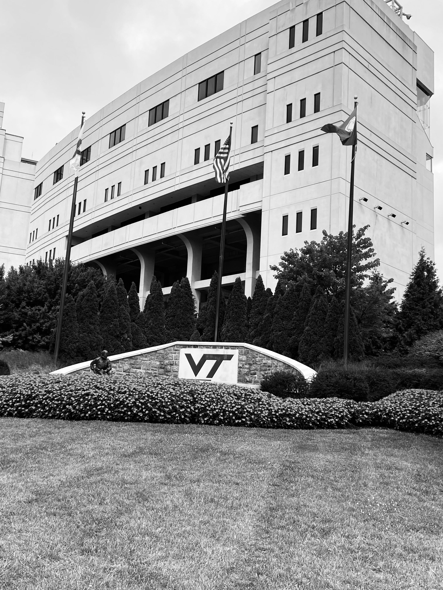

I want to use my education to combine my interest in computing and arts
to create something meaningful in the hopes of seeing an even better, equitable, and innovative world.
University
University of Texas at Austin, Austin, TX [Aug 2022 - May 2024(expected)]
Master of Science - Computer Science
Virginia Tech, Blacksburg, VA [Aug 2018 - May 2022]
Bachelor of Science - Computer Science, Minor – Mathematics
Grade: Summa Cum Laude, Honors Laureate

Achievements
Inducted into the Phi Beta Kappa Honor Society. (April 2022)
Received a scholarship from AWC@VT to attend the ACM Richard Tapia 2021 Conference.
Recipient of the CS@VT scholarship (awarded by Virginia Tech, Department of Computer Science) to attend
GHC, 2020 (The Grace Hopper Women in Computing, 2020).
Named on the Dean’s List for all semesters ever attempted at Virginia Tech.
Leadership and Clubs
CS Ambassador at CS@VirginiaTech [Fall 2020 - Present]
Represents the CS Department to prospective students, help with the weekly information sessions, open house and several other recruitment events.
Helps the department administration with the student perspective by coming up with innovative ideas that could help the students at CS@VT
I am also the alteranate CS Ambassador representative at the CS@VT Department Faculty Meetings.
Member at the Association of Women in Computing at Virginia Tech. [Fall 2012 - Present]
Co-founder of the CSX club at Virginia Tech
Rewriting the Code (RTC) Member [Fall 2020 - Present]